UDN
Search public documentation:
FBXAnimationPipelineCH
English Translation
日本語訳
한국어
Interested in the Unreal Engine?
Visit the Unreal Technology site.
Looking for jobs and company info?
Check out the Epic games site.
Questions about support via UDN?
Contact the UDN Staff
日本語訳
한국어
Interested in the Unreal Engine?
Visit the Unreal Technology site.
Looking for jobs and company info?
Check out the Epic games site.
Questions about support via UDN?
Contact the UDN Staff
FBX 动画通道
概述
命名
创建动画
从 3D 应用程序中导出动画
- 在视口中选择与要导出的动画对应的骨骼。
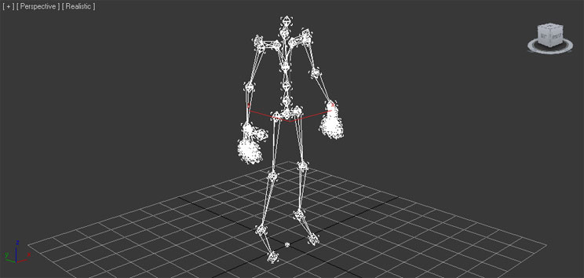
- 在 File(文件) 菜单中选择 Export Selected(导出选中项) (或者您不管选中项是什么而是想导出场景中的所有资源，那么则选择 Export All(导出所有) ) 。

- 选择要将动画导出到的 FBX 文件的位置及名称，并点击
 按钮。
按钮。
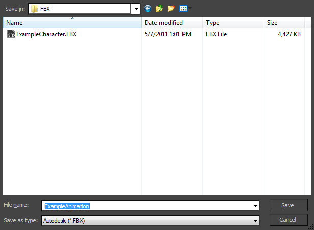
- 设置 FBX 导出 对话框中相应的选项。为了能够导出动画，您必须启用 Animations（动画） 复选框。
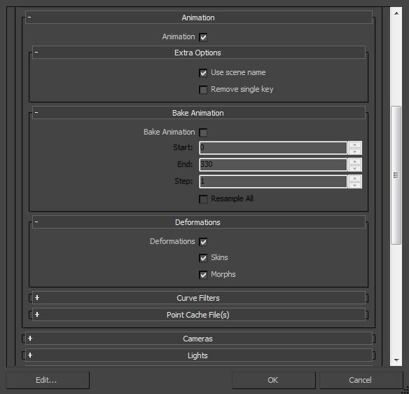
- 点击
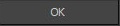
按钮创建包含这些网格物体的 FBX 文件。
- 在视口中选中要导出的关节。
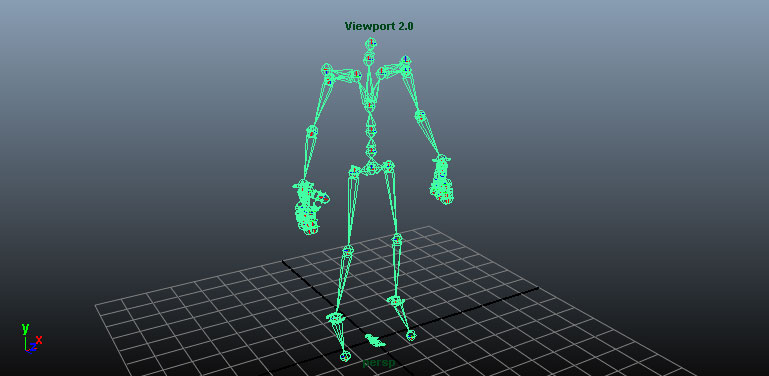
- 在 File(文件) 菜单中选择 Export Selected(导出选中项) (或者您不管选中项是什么而是想导出场景中的所有资源，那么则选择 Export All(导出所有) ) 。

- 选择要放置导出动画的 FBX 文件的位置和名称，然后在 FBX 导出 对话框中设置相应的选项。为了能够导出动画，您必须启用 Animations（动画） 复选框。

- 点击
 按钮创建包含这些网格物体的 FBX 文件。
按钮创建包含这些网格物体的 FBX 文件。
导入动画
- 在内容浏览器中点击
按钮。再打开的文件浏览器中导航到您想导入的文件并选中它。*注意:* 您可以在下拉菜单中选择
 来过滤不需要的文件。
来过滤不需要的文件。

- 在 Import(导入) 对话框中选择适当的设置。确保启用了 Import Animations（导入动画） 。*注意：* 导入网格物体的名称要遵守默认的命名规则。请参照 FBX 导入对话框部分获得关于这些设置的完整信息。

- 点击
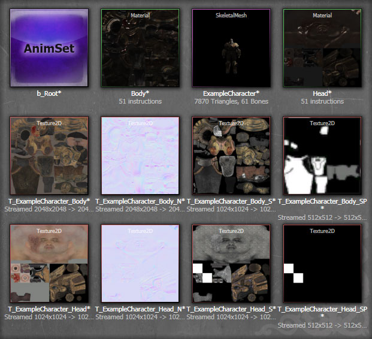
通过在 AnimSet 编辑器中查看导入的网格物体，然后在 Anim 选项卡中选择刚刚创建的 AnimSet，您可以播放导入的动画序列，同时会看到它按照预期的方式工作。

- 通过在内容浏览器中双击您想要放置导入动画的 AnimSet 或双击与这个 AnimSet 关联的骨架网格物体，然后在 AnimSet 编辑器的 Anim 选项卡中选择这个 AnimSet，这样就可以打开这个 AnimSet 了。

- 在 AnimSet 编辑器的 File（文件） 菜单中，选择 Import FBX Animation（导入 FBX 动画） 。
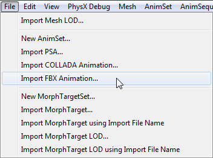
- 在文件浏览器中导航到包含这个动画的 FBX 文件，并选择它。*注意：* 您可能需要将文件格式设置为
 才能看到您的文件。
才能看到您的文件。

- 在导入动画的时候会显示进度对话框。完成后，将会在 Anim 选项卡的 Animation Sequences（动画序列） 列表中显示新的动画序列（默认情况下与 FBX 文件的名称相同）。

现在您可以播放导入的动画序列，同时会发现它按照预期的方式工作。
将动画从虚幻编辑器导入到 FBX 中
- 在内容浏览器中，双击（或者右击然后选择 使用动画集编辑进行编辑(Edit Using AnimSet EditormSet Editor) ）包含您想要导出在动画集编辑器中打开的动画序列的动画集资源。
- 在 动画(Anim) 选项卡中，选择您想要导出的动画序列。
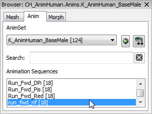
- 在 文件(File) 菜单中，选择 导出 FBX 动画(Export FBX Animation) 。
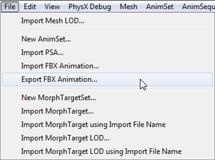
- 选择一个位置，然后为要导出到显示的文件浏览器中的文件命名。
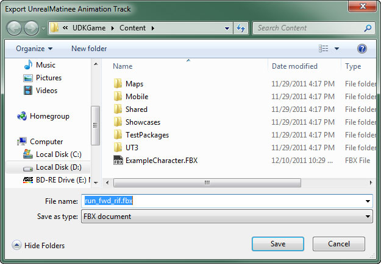
显示对话框，允许您将当前骨架网格物体与动画序列一起导出。
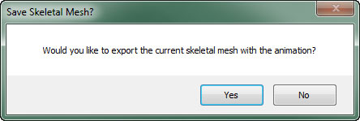
选择 是(Yes) 导出骨架网格物体； 否(No) 只导出动画序列。
资源
- ExampleSkeleton.fbx（右击 > 另存为...）